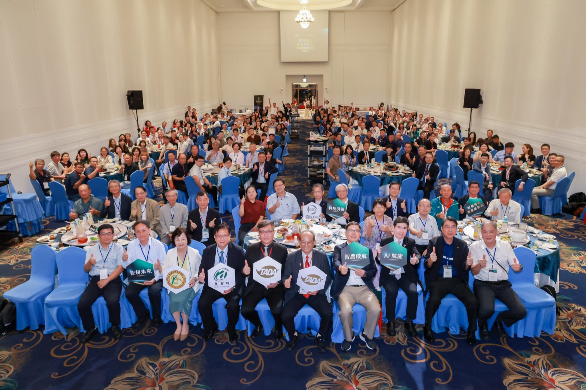
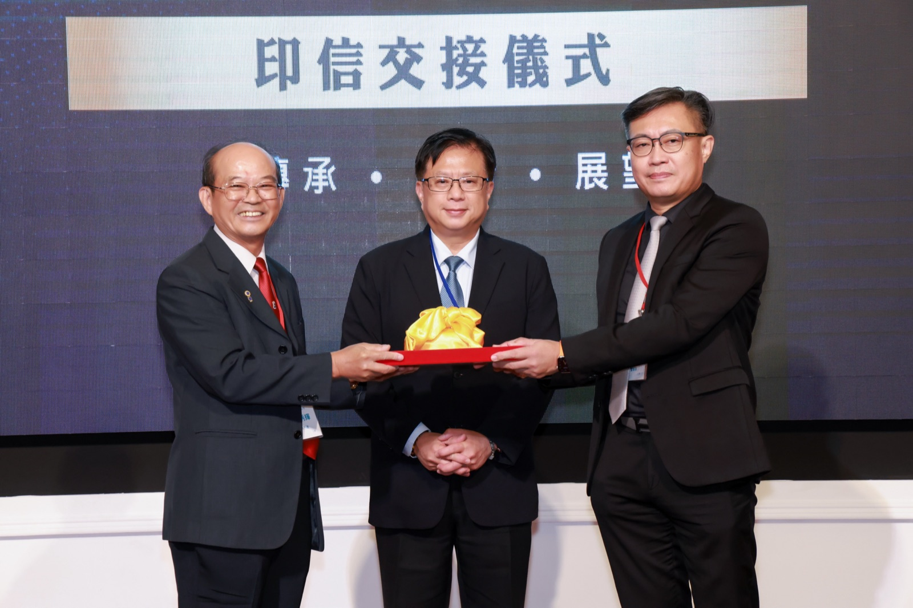
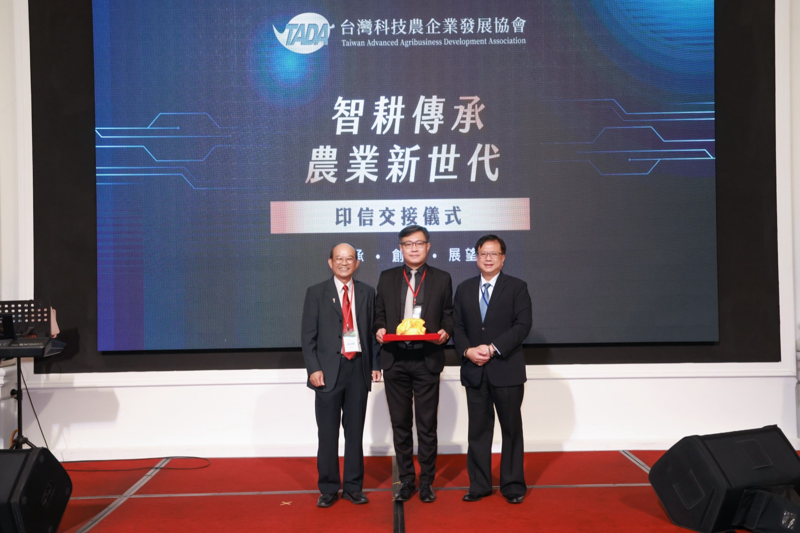
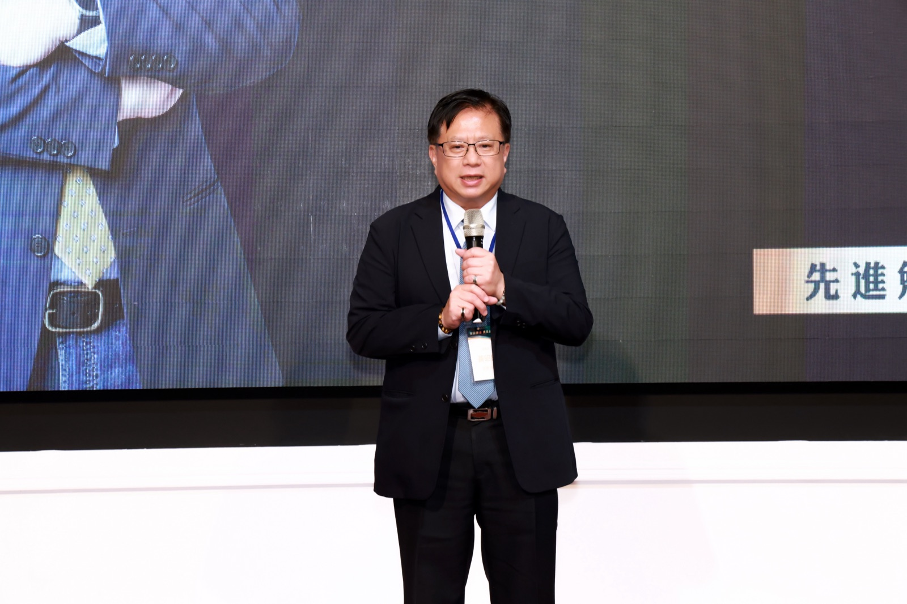
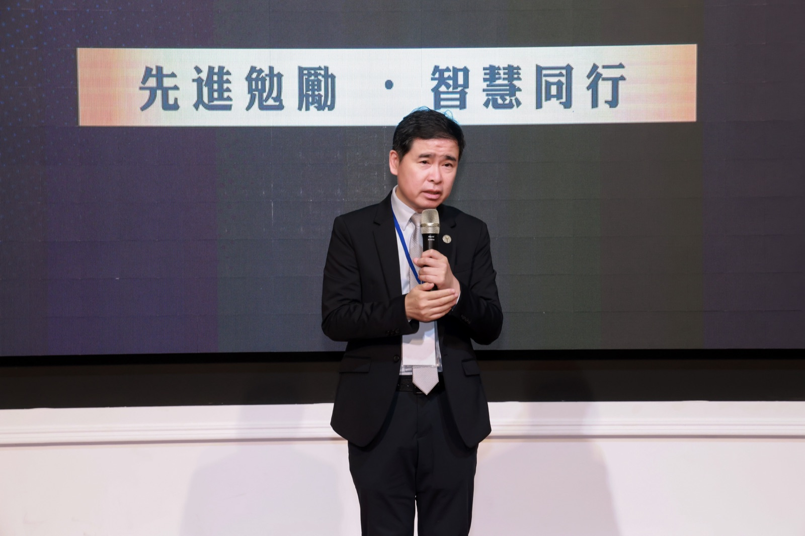
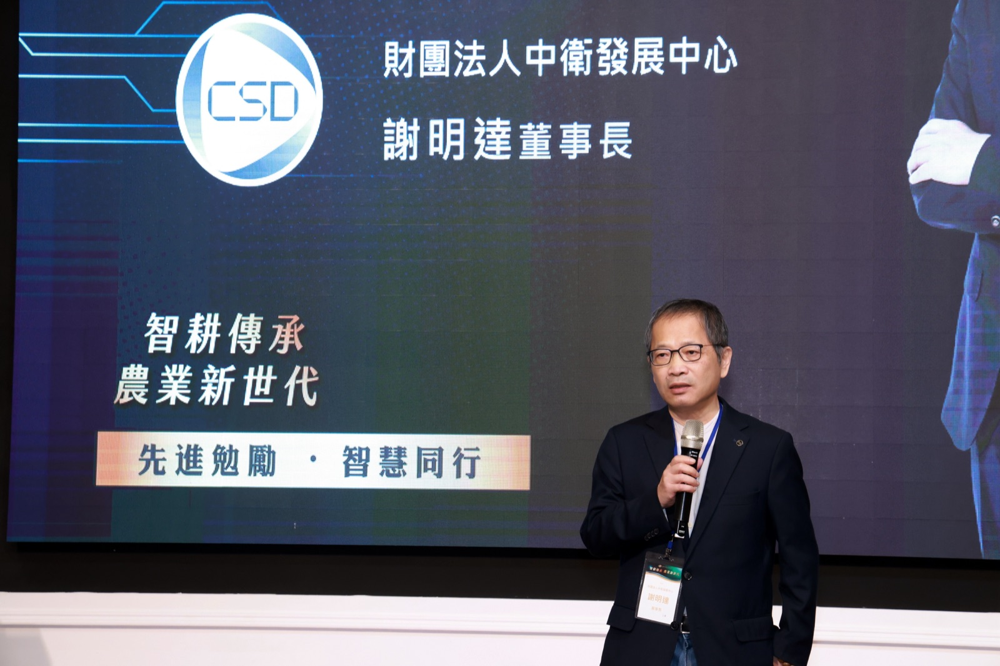
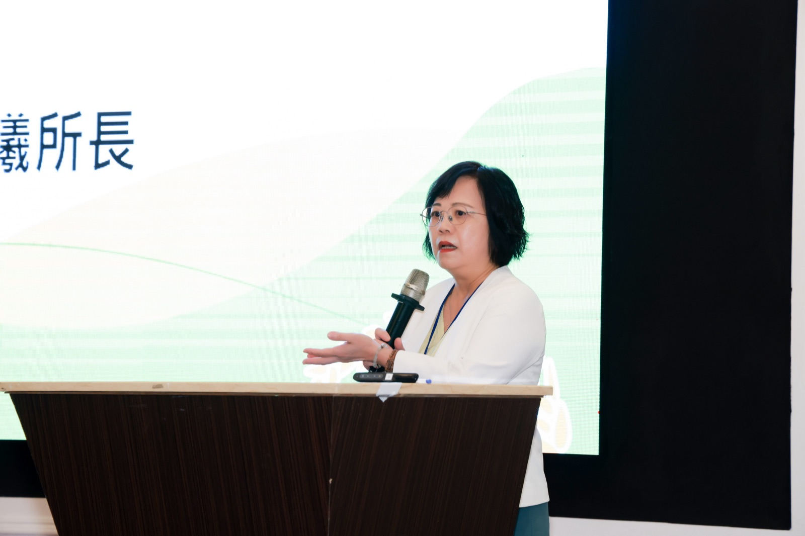
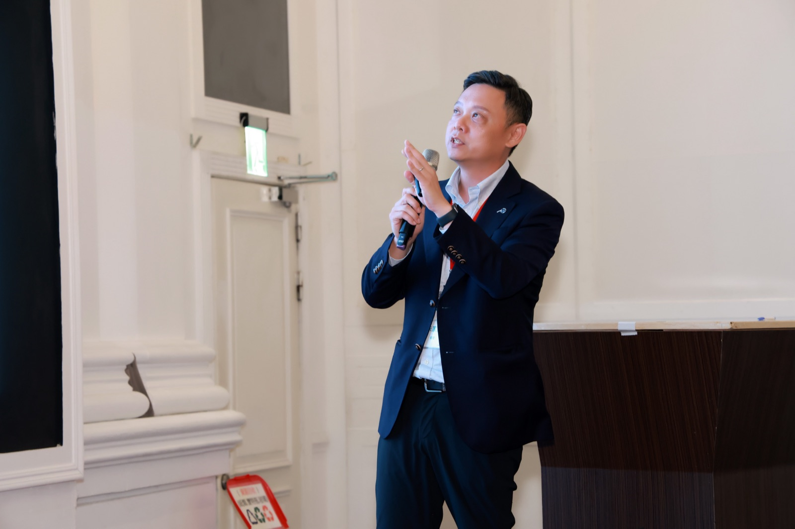
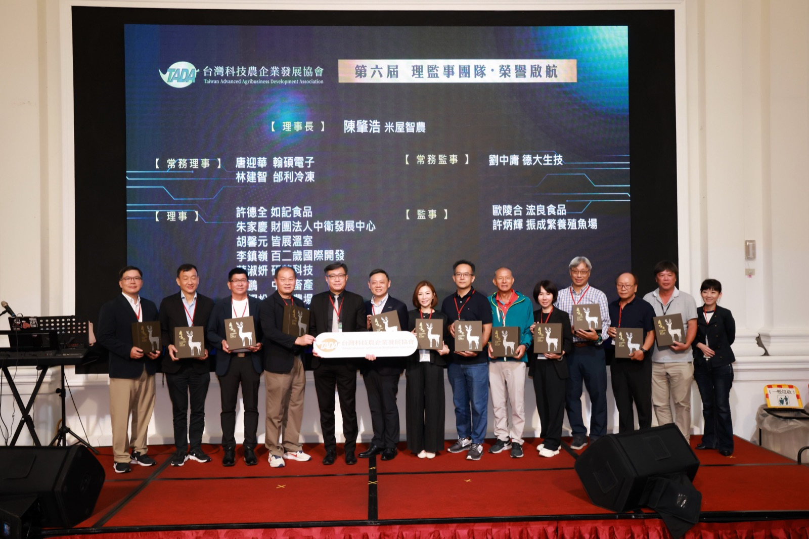

【台中訊】台灣科技農企業發展協會（TADA）4 日在台中烏日舉辦「智耕傳承・農業新世代」AI 賦能論壇暨第六屆理事長就職典禮，並召開第六屆會員大會暨理監事改選。第六屆理事長由米屋智農股份有限公司董事長陳肇浩接任。面對人工智慧快速發展與農企業世代交替，新一屆將以 AI 賦能、二代接班、跨產業生態系合作，以及品牌結盟與國際行銷為發展方向，串聯產官學研及農企業力量，推動 TADA 從科技農業交流平台進一步走向產業共創。

就職交接典禮在農業部政務次長黃昭欽監交下進行，第五屆理事長胡炳輝將印信正式交予第六屆理事長陳肇浩，象徵 TADA 完成階段性傳承、邁入新的發展里程碑。黃昭欽致詞表示，面對農業人力短缺等挑戰，「科技農業已經是必走的一條路」，無論農、漁等產業，都需要科技輔助發展，也期許在協會帶領下，帶動更多企業投入農業科技研發與應用。


陳肇浩表示，農業已經進入科技農業的時代，當前台灣農企業正同時面對 AI、科技、國際競爭與世代交替等多股變革力量，「風來了，我們不需要逃，而是要看見風、掌握風、借風而起。」未來 TADA 不只是談 AI，更要推動 AI 工具與智慧科技真正進入農企業場域；同時協助第一代長年累積的產業經驗，透過數位化、資料化與系統化傳承給下一代，並結合政府資源與各界產業力量，促成跨域合作、品牌共創與國際市場鏈結。
面對台灣農企業如何走向國際，陳肇浩強調，產業不能單打獨鬥，「我們是一群人打團體戰，要把台灣的科技農企業發展到全世界。」新一屆 TADA 希望進一步凝聚會員，串聯農企業、科技業、學研、通路及政府資源，讓不同領域的專業彼此合作，將台灣農業的技術、產品與品牌共同推向國際市場。
農業部政務次長黃昭欽、國立台灣大學生物資源暨農學院院長林裕彬及中衛發展中心董事長謝明達也分別致詞，為 TADA 第六屆團隊送上祝福與期許。謝明達以「同行同命」勉勵產業夥伴，強調中衛將持續陪伴農企業朝「科技化、企業化、年輕化」發展，透過資源串聯與跨域合作，與農企業共同成長，迎向產業轉型的新階段。



本次大師講座邀請農業部農業試驗所所長李紅曦，以「傳承與創新．以科技驅動臺灣農產業韌性發展」為題，分享農業科技研發與產業落地趨勢。李紅曦從氣候、人力、資源、產銷及轉型交織的系統性風險出發，指出面對農業的系統性挑戰，應以智慧提升效率、以韌性因應風險、以永續維護資源；並透過資通訊、遙測及 AI 技術，讓農業逐步從經驗判斷走向數據驅動，以精準管理提升產量、品質及資源使用效率。
李紅曦也強調，科研成果要真正走進產業，必須從產業問題與需求出發，串聯研發、驗證、商業模式、資金、法規及市場資源，推動技術落地、成果擴散及國際鏈結，讓科技研發真正轉化為農產業發展的力量。

活動同時安排產業升級輔導資源分享，由中衛發展中心前瞻服務部協理朱家慶介紹農企業轉型相關政策與輔導資源，涵蓋 AI 應用、數位與永續轉型、人才培育、經營輔導及市場拓展等面向。面對農企業導入 AI 常見的資料分散、技術門檻及專業引導不足等問題，相關輔導透過現況盤點、訪視診斷、實務內訓與顧問陪跑，協助企業從實際營運需求出發，逐步建立 AI 應用與轉型能力。

呼應第六屆「AI 賦能」的發展方向，TADA 未來也將逐步導入 AI 工具與數位化管理思維，強化會員資訊、活動、協會知識及相關資源的整合與傳承，提升協會治理與會員服務效率；並持續探索 AI 在農企業經營與組織管理上的應用，讓科技不只進入農業生產現場，也成為企業轉型與世代傳承的助力。
TADA 長期以推動台灣農業科技化、協助傳統農業轉型、建立農產品產銷平台及拓展國際市場為重要宗旨。2026 年協會以「科技食代 Tech Food Era」為主題，組織會員企業參與台北國際食品展，展現從科技育種、品牌加工到行銷通路的產業鏈合作。邁入第六屆，面對人才接班、企業治理、供應鏈韌性及國際市場等多重課題，協會將進一步把「交流」轉化為「共創」，持續串聯產官學研及農企業資源，透過 AI 賦能、世代傳承與跨域結盟，促成技術、通路、品牌與國際市場合作，攜手打響台灣農業品牌，共同提升台灣農企業的韌性與國際競爭力。
